Linux远程管理工具（PuTTY和SecureCRT）
通过《Linux远程管理协议》一节可以知道，Linux远程管理服务器多基于 SSH 协议。本节给大家介绍 2 种常见的基于 SSH 协议的远程管理工具，分别是 PuTTY 和 SecureCRT。
在使用远程管理工具之前，应先设置宿主机 Windows 与虚拟机 Linux 能够连通。这里要注意 VMware 的网卡设置，Linux 中更改网络设置可以使用 ifconfig 和 setup 命令，若还是无法进行远程连接，要么就是 SSH 服务没有启动，要么就是 Linux 防火墙默认屏蔽了 SSH 服务的端口。
另外还要记住一点，远程连接管理服务器与本地操作服务器是一样的，没有任何区别。
PuTTY 包含很多组件，比如说：
尽管有如此多的组件，但对初学者来说，用的最多的主要是 PuTTY。下载 PuTTY 并双击 putty.exe 文件，就会出现如图 1 所示的配置界面。
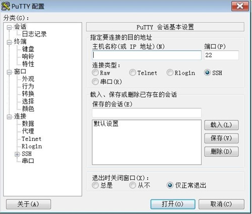
图 1 PuTTY配置界面
在“主机名称（或 IP 地址）”文本框中输入远程登录主机 IP 地址，如 192.168.8.88。
“端口”根据使用的协议有所区别（选择不同的“连接类型”选项，端口会自动变化），一般选择“SSH”或“Telnet”，这取决于 Linux 服务器所提供的服务。
设置完成后，单击"打开"按钮，就会出现如图 2 所示的操作界面。
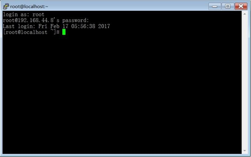
图 2 PuTTY作界面
如果希望 PuTTY 支持中文显示，则修改的方法是：在"窗口->转换"的右侧设置项"远程字符集"下拉列表框中选择"UTF-8"，如图 3 所示。
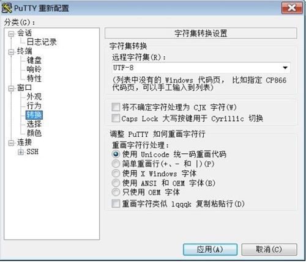
图 3 PuTTY支持中文显示
使用此工具的优势是，管理多台服务器时可以很方便地记住多个地址，并且可以设置自动登录，方便远程管理，效率很高。但与 PuTTY 相比，SecureCRT 需要安装，并且是一款共享软件，不付费注册不能使用（网络上散布有一些注册码，读者可自行搜索使用）。
安装 SecureCRT 并启动后，单击"快速连接"按钮，输入 IP 地址和用户名，按照提示输入密码即可登录，与 PuTTy 类似，如图 4 所示。
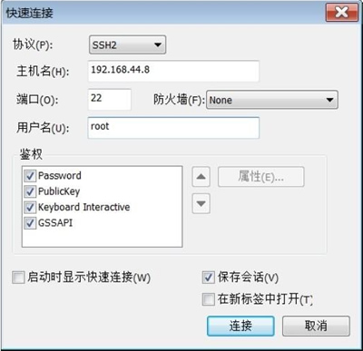
图 4 SecureCRT 使用
SecureCRT 默认不支持中文（中文会显示为乱码），一种解决方法是：在建立连接后，进入“选项”菜单，选择“会话选项”，在“终端->仿真”的右侧设置项“终端”下拉列表框中选择“Xterm”，勾选“ANSI颜色”复选框支持颜色显示，单击“确定”按钮，如图 5 所示。
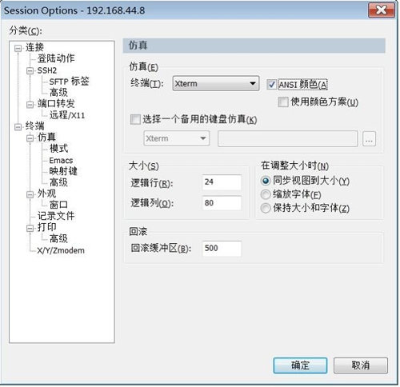
图 5 SecureCRT 仿真设置
在“终端->外观”的右侧设置项“当前颜色方案”下拉列表框中选择“Traditional (传统)”，“标准字体”和“精确字体”均选择中文字体，如新宋体或楷体，并确保“字符编码”选择为“UTF-8”（CentOS 默认使用的中文字符集为 UTF-8），取消勾选“使用 Unicode 线条绘制字符”复选框，保存即可，如图 6 所示。
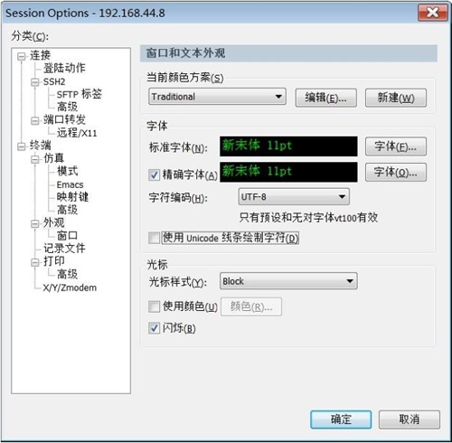
图 6 SecureCRT 外观设置
除 PuTTY 和 SecureCRT 之外，还有一款笔者很喜欢用的 Windows 与 Linux 之间的文件共享工具 WinSCP，可以方便地实现两个系统之间的文件传输，有兴趣的读者也可以自行下载安装体验。
远程管理工具众多，但在使用上大同小异，本节不做过多介绍。
在使用远程管理工具之前，应先设置宿主机 Windows 与虚拟机 Linux 能够连通。这里要注意 VMware 的网卡设置，Linux 中更改网络设置可以使用 ifconfig 和 setup 命令，若还是无法进行远程连接，要么就是 SSH 服务没有启动，要么就是 Linux 防火墙默认屏蔽了 SSH 服务的端口。
另外还要记住一点，远程连接管理服务器与本地操作服务器是一样的，没有任何区别。
PuTTY远程管理工具
这是一款完全免费的 Windows 远程管理客户端工具，体积小，操作简单，不需要安装（下载后即可使用）。
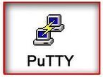
对于经常到客户公司做技术支持和维护的朋友来说，该工具的使用相当方便，只要随身携带 U 盘，即可实现"一盘在手，随处登录"。PuTTY 包含很多组件，比如说：
- PuTTY（远程登录的客户端）。
- PSCP（SCP 客户端，在命令行下通过 SSH 协议复制文件）。
- PSFTP（SFTP 的命令行客户端，类似于 FTP 的文件传输，基于 SSH 协议）。
- PuTTYtel（仅仅是一个 Telnet 客户端）。
- Plink（命令行工具，可用于执行远程M务器上的命令）。
- Pageant（PuTTY、PSCP、Plink 的 SSH 认证代理）。
- PuTTYgen（用来生成 RSA 和 DSA 密钥的工具）。
尽管有如此多的组件，但对初学者来说，用的最多的主要是 PuTTY。下载 PuTTY 并双击 putty.exe 文件，就会出现如图 1 所示的配置界面。
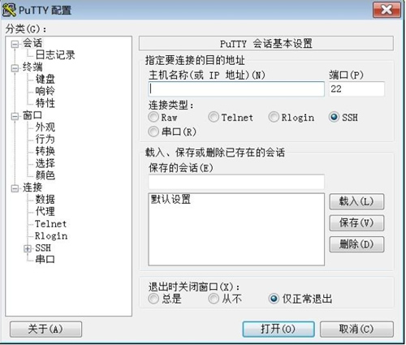
图 1 PuTTY配置界面
在“主机名称（或 IP 地址）”文本框中输入远程登录主机 IP 地址，如 192.168.8.88。
“端口”根据使用的协议有所区别（选择不同的“连接类型”选项，端口会自动变化），一般选择“SSH”或“Telnet”，这取决于 Linux 服务器所提供的服务。
建议选择 SSH，Telnet 服务密码会被明文传输，安全性较差，目前大多数 UNIX/Linux 系统默认禁用 Telent。
如果想保存会话方便下次连接，则可以在"保存的会话"文本框中输入一个名称，单击"保存"按钮即可把这次的连接配置保存起来。设置完成后，单击"打开"按钮，就会出现如图 2 所示的操作界面。
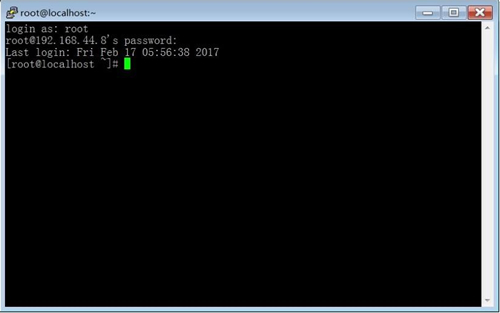
图 2 PuTTY作界面
如果希望 PuTTY 支持中文显示，则修改的方法是：在"窗口->转换"的右侧设置项"远程字符集"下拉列表框中选择"UTF-8"，如图 3 所示。
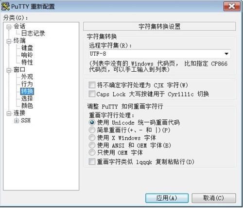
图 3 PuTTY支持中文显示
SecureCRT远程管理工具
SecureCRT 是一款功能强大的远程管理工具，该软件将 SSH（Secure Shell）的安全登录、数据传送性能与 Windows 终端仿真提供的可靠注、可用性和可配置性融于一身。安装 SecureCRT 并启动后，单击"快速连接"按钮，输入 IP 地址和用户名，按照提示输入密码即可登录，与 PuTTy 类似，如图 4 所示。
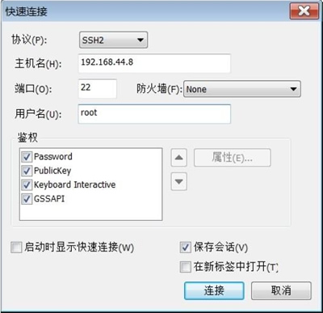
图 4 SecureCRT 使用
SecureCRT 默认不支持中文（中文会显示为乱码），一种解决方法是：在建立连接后，进入“选项”菜单，选择“会话选项”，在“终端->仿真”的右侧设置项“终端”下拉列表框中选择“Xterm”，勾选“ANSI颜色”复选框支持颜色显示，单击“确定”按钮，如图 5 所示。
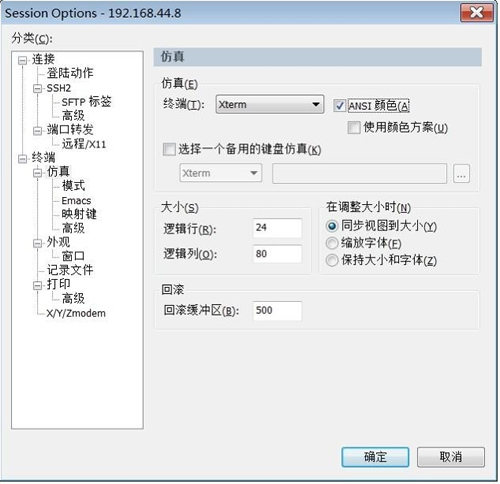
图 5 SecureCRT 仿真设置
在“终端->外观”的右侧设置项“当前颜色方案”下拉列表框中选择“Traditional (传统)”，“标准字体”和“精确字体”均选择中文字体，如新宋体或楷体，并确保“字符编码”选择为“UTF-8”（CentOS 默认使用的中文字符集为 UTF-8），取消勾选“使用 Unicode 线条绘制字符”复选框，保存即可，如图 6 所示。
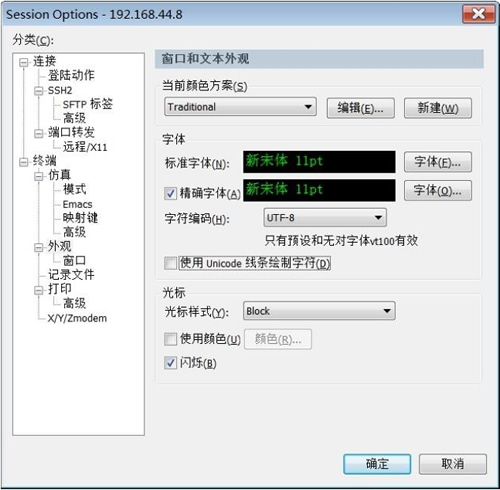
图 6 SecureCRT 外观设置
除 PuTTY 和 SecureCRT 之外，还有一款笔者很喜欢用的 Windows 与 Linux 之间的文件共享工具 WinSCP，可以方便地实现两个系统之间的文件传输，有兴趣的读者也可以自行下载安装体验。
远程管理工具众多，但在使用上大同小异，本节不做过多介绍。
关注公众号「站长严长生」，在手机上阅读所有教程，随时随地都能学习。内含一款搜索神器，免费下载全网书籍和视频。

微信扫码关注公众号